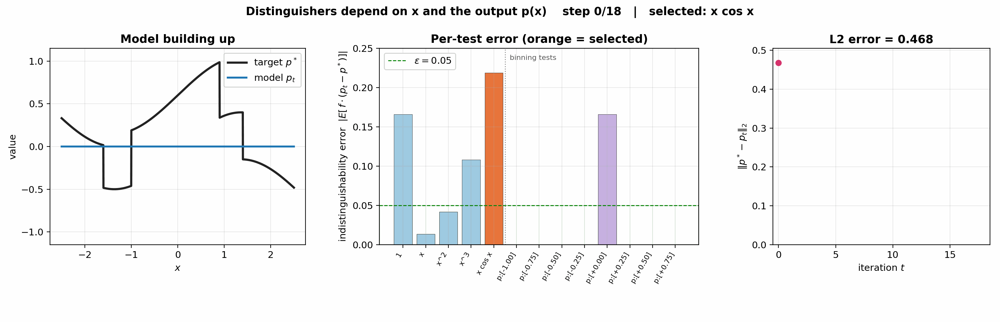

The BOOST procedure with ε = 0.05 on the same target as the companion animation, but the class of tests now also contains functions of the model's output: the level-set indicators 1{p(x) ∈ B} for buckets B partitioning [−1, 1] (purple bars), alongside the five tests that depend only on x (blue bars). At each step the orange bar is the test selected for the update; the procedure halts when every test in the larger class is inside the ±ε band.

Because we've enriched the set of functions in ways that caught previous errors, the final l2 error is now smaller.